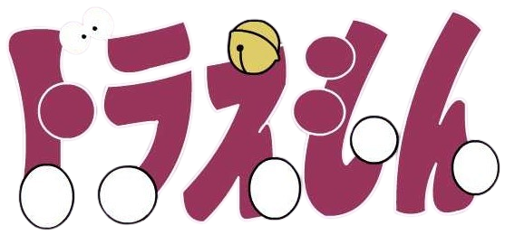

Doraemon (Japanese:ドラえもん [doɾaemoɴ]) is a Japanese manga series written and illustrated by Fujiko Fujio (the pen name of the duo Hiroshi Fujimoto and Motoo Abiko). The series has also been adapted into a successful anime series and media franchise. The story revolves around an earless robotic cat named Doraemon, who travels back in time from the 22nd century to aid a boy named Nobita Nobi.
| Doraemon (1973) | |
|---|---|
|  | |
| Based on | Fujiko F. Fujio |
| Country of origin | Japan |
| No. of episodes | 26 |
| Production companies | Nippon TeleMovie Productions, Nippon Television |
| Original release | April 1 – September 30, 1973 |
| Doraemon (1979) | |
|---|---|
| Theme music composer | Shunsuke Kikuchi |
| No. of episodes | 1787 and 30 specials |
| Production companies | Shin-Ei Animation, TV Asahi, Asatsu-DK |
| Original release | April 2, 1979 – March 18, 2005 |
| Doraemon (2005) | |
|---|---|
| Also known as | Doraemon: Gadget Cat from the Future |
| Created by | Fujiko F. Fujio |
| Country of origin | Japan |
| No. of seasons | 15 |
| No. of episodes | 1160 |
| Production companies | Shin-Ei Animation, TV Asahi, ADK Emotions |
| Original release | April 15, 2005 – present |
The first full story in the Doraemon manga series was published in January 1970. A pre-advertisement for the manga was published in six different magazines in December 1969. A total of 1,465 stories were created in the original series, which are published by Shogakukan. It remains as the best-selling manga for children and one of the best-selling manga in the world, and has sold over 100 million copies as of 2015. The volumes are collected in the Takaoka Central Library in Toyama, Japan, where Fujiko Fujio was born. Turner Broadcasting System bought the rights to the Doraemon anime series in the mid-1980s for an English-language release in the United States, but cancelled the plan without explanation before broadcasting any episodes. In July 2013, Voyager Japan announced the manga would be released digitally in English via the Amazon Kindle e-book service. Awards for Doraemon include the Japan Cartoonists Association Award for excellence in 1973, the first Shogakukan Manga Award for children's manga in 1982, and the first Osamu Tezuka Culture Award in 1997. In March 2008, Japan's Foreign Ministry appointed Doraemon as the nation's first "anime ambassador." A Ministry spokesperson explained the novel decision as an attempt to help people in other countries understand Japanese anime better and to deepen their interest in Japanese culture. The Foreign Ministry action confirms that Doraemon has come to be considered a Japanese cultural icon. In India, its Hindi, Tamil and Telugu translation has been telecasted, where the anime version is the highest-rated kids' show; winning the Best Show For Kids award twice at the Nickelodeon Kids' Choice Awards India in 2013 and 2015. In 2002 Time Asia magazine acclaimed the character as an "Asian Hero" in a special feature survey. An edited English dub distributed by TV Asahi aired on Disney XD in the United States started on July 7, 2014. On August 17, 2015, another English dubbed version distributed by LUK Internacional was broadcast on Boomerang UK. The film series is the largest by number of admissions in Japan.
List of characters will be here soon...
There's a separate dedicated page for List of Doraemon Movies. Click here to visit.
List of real world places appeared in anime will be here...